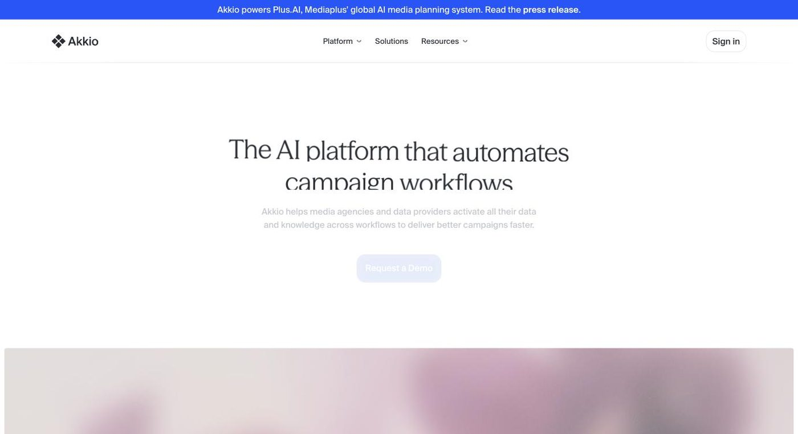

Akkio
Enterprise AI platform for media agencies and data providers: audiences, modeling and campaign measurement

- Category
- Data Analysis
- Pricing
- Enterprise only, custom pricing - contact sales. No public plans, dollar amounts or trial listed on the pricing page (checked 2026-10-26).
- Best for
- Media agencies, retail media networks and data providers with data teams and enterprise budgets.
- Official site
- www.akkio.com
- Last checked
- 2026-10-26
Akkio is now an enterprise platform for media agencies and data providers, so it suits them far better than small businesses. If you are a small team wanting a cheap self-serve tool for churn or lead scoring, skip it: the current site shows only a contact-sales Enterprise plan.
The product is organized around five stages: strategize (chat over internal documents and signals), segment (combine first- and third-party data into audiences), plan (simulate media plans to forecast outcomes), deploy (activate audiences across platforms) and measure (analyze performance). It includes Chat with Data, no-code modeling and reporting, plus role-based access and observability of AI actions, and says it can run within the customer's cloud. Customers named on the site include Havas, LG Ad Solutions and Horizon Media.
Media agencies, retail media networks and data providers with data teams and enterprise budgets. Not for freelancers or small businesses wanting self-serve pricing, general-purpose ML, or a free tier.
Key features
Chat with Data
Ask questions of business data and documents in natural language.
No-code modeling
Build propensity and media-mix models without writing code.
Audience building
Combine first- and third-party data into segments.
Media plan simulation
Forecast outcomes of planned campaigns before spending.
Activation and measurement
Push audiences to platforms and analyze campaign performance.
Governance
Role-based access controls and observability of AI actions; site lists SOC 2, HIPAA and GDPR badges.
Pricing breakdown
Enterprise
- Full platform access to all domain-specific agents
- SaaS or embedded in your infrastructure
- 24/7 priority support, enhanced security and compliance
Pros and cons
Pros
- Covers the whole agency workflow, from audience segmentation to media simulation and measurement, in one product.
- No-code modeling means analysts can build propensity or media-mix models without a data science team.
- Governance features (role-based access, AI action observability) and a deploy-in-your-cloud option help with data-sensitive clients.
- Named agency customers on the site suggest real adoption in its target market.
Cons
- Pricing is only available via sales, so small teams cannot quickly estimate cost.
- No trial or free tier is listed on the pricing page.
- The focus has shifted toward media and advertising; general-purpose business prediction fit is less clear and not something the site now emphasizes.
- Compliance badges are listed on the site; confirm scope and documentation in procurement rather than assuming.
Alternatives to Akkio
Frequently asked questions
Does Akkio have a free trial or free plan?
None is listed on its pricing page, which shows only an Enterprise plan with a contact-sales link.
How much does Akkio cost?
Pricing is custom and not published. You need to contact sales.
Is Akkio still a no-code churn and lead-scoring tool?
Its site now centers on media agencies and data providers, with no-code propensity and media-mix modeling as part of a broader workflow.
Who are the alternatives?
For general enterprise predictive ML see DataRobot or H2O.ai; for simple spreadsheet analysis see Julius AI.
Ready to try Akkio?
Head to the official site to explore pricing and start a free trial where available.
Visit Akkio →